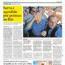

Em março de 2004, o jornal Folha de S. Paulo publica na capa de sua edição de domingo (07.03.2004), sob o título “Decoração burocrata”, uma reportagem informando que um valioso “desenho do pintor espanhol” Pablo Picasso “passa os dias debaixo de luzes fluorescentes e em meio à papelada de uma repartição do governo federal”, dividindo sua “moldura com restos de inseto”. Na foto, além da reprodução do supostamente valioso desenho, um retrato do Presidente Lula. O sentido da matéria é claro: os novos ocupantes do governo federal não reconhecem e não sabem lidar com o valor da arte. A notícia do suposto descaso com tão valiosa obra aparece em vários jornais, revistas e sites, no Brasil e no exterior. A observação atenta de alguns leitores logo deixa evidente que se trata de uma “barriga”: o tal desenho de Picasso é, na verdade, de uma reprodução fotográfica, sem nenhum valor. Os jornais são alertados de seu erro, mas nenhum desmente a informação. Em dezembro de 2005, o “Picasso do INSS” está outra vez na capa da Folha de São Paulo (29.12.2005) e também na do Estado de S. Paulo: um incêndio destruiu parte do prédio do INSS mas, para alívio de todos e apesar do descaso dos órgãos públicos, o “valioso” Picasso foi salvo das chamas. Mais uma vez os jornais são alertados por leitores de que se trata de uma reprodução sem valor, mas nada noticiam. As reportagens que tentam esclarecer os fatos só fazem aumentar a confusão. Detalhe: o supostamente valioso desenho de Picasso foi dado ao INSS como pagamento de uma dívida. Em quanto foi avaliado? E por quem?
PICASSO DO INSS
Como um cartaz de 20 dólares vira notícia
Links
-
“A Mulher em Branco” (Woman in White) no Metropolitan
-
“O falso Picasso falso ou Jornalismo: faça você mesmo”, por Jorge Furtado
-
Repercussão fora do Brasil
El Siglo de Torreon (México): “Descubren descuidado Picasso em Brasil” (09/03/2004)
-
Associated Press Worldstream: "Brazilian art historian finds apparent Picasso drawing in government office"
(10/03/2004)
Repercussão
-
INSS encontra por acaso obras de Picasso
Folha de São Paulo (07/03/2004)
-
INSS encontra por acaso obras de Picasso
Folha de São Paulo (07/03/2004)
-
Salvo do fogo
Folha de São Paulo (29/12/2005)
-
Fogo no INSS poupa obra atribuída a Picasso
Folha de São Paulo (29/12/2005)
-
Obra de Picasso teria escapado do incêndio
O Estado de São Paulo (29/12/2005)
-
Um Picasso teria escapado do fogo
O Estado de São Paulo (29/12/2005)
-
Folha corrige informação de 2004 citada em filme sobre jornalismo
Folha de São Paulo (11/08/2014)
BOLINHA DE PAPEL
Por que ninguém lembra de algo que todo mundo viu?
No dia 20 de outubro de 2010, pouco antes do segundo turno da eleição presidencial brasileira, a campanha eleitoral foi marcada por um incidente. O candidato de oposição, José Serra, interrompeu sua agenda para ser submetido a uma tomografia e a exames clínicos. O motivo: uma suposta agressão por militantes governistas, amplamente divulgada nos veículos de comunicação, nas redes sociais e no programa de televisão do candidato. Foram muitas as tentativas, nos telejornais e nas redes sociais, de provar que algum objeto pesado realmente atingira o candidato, nenhuma com sucesso. O fato é que, poucos minutos antes da suposta agressão, o candidato foi atingido por uma bolinha de papel. Este fato foi documentado por, pelo menos, cinco câmeras de televisão. A imprensa, que tanto discutiu a agressão que ninguém viu, nunca se interessou por investigar quem foi o homem que, diante de cinco câmeras de tevê, jogou a bolinha de papel em José Serra.
Vídeos
-
Programa de TV da campanha Serra Presidente / 2010
(21/10/2010)
-
Programa de TV da campanha Serra Presidente / 2010
(22/10/2010)
-
Candidato José Serra é atingido na cabeça
TV Globo
-
Candidato Serra Agredido por Petistas no Rio
TV Globo
-
#LulaMente: Jornal Nacional desmente presidente e mostra que agressão a José Serra existiu
TV Globo
-
José Serra é agredido no Rio de Janeiro
BAND
-
José Serra e a Bolinha de Papel
SBT (20/10/2010)
-
Celular jornalista Folha de S.Paulo
Repercussão
-
Serra leva pancada na cabeça em confusão com militantes do PT no Rio
(20/10/2010)
-
Serra cancela agenda no Rio após pancada na cabeça, veja vídeo
(20/10/2010)
-
Vídeo que mostra bola de papel atingir Serra é anterior a arremesso de outro objeto
(21/10/2010)
-
Dor de cabeça
Folha de S.Paulo (21/10/2010)
-
Serra é agredido durante confronto no Rio
Folha de S.Paulo (21/10/2010)
-
No Rio, petistas agridem Serra em evento
Folha de S.Paulo (21/10/2010)
-

Serra é agredido por petistas no Rio
Folha de S.Paulo (21/10/2010)
-
Molina divulga laudo sobre vídeos de evento em que Serra é agredido
(22/10/2010)
-
PSDB pedirá a PF investigação sobre ataques a Serra
(22/10/2010)
-

Fazendo fita
Casa de Cinema de Porto Alegre (23/10/2010)
TAPIOCA
Um escândalo de 8 reais e 30 centavos
No final de 2011, o ministro dos esportes Orlando Silva foi vítima de uma tentativa de “assassinato de reputação”. A imprensa deu grande repercussão aos gastos do ministro com seu cartão corporativo. Ele foi acusado de gastar indevidamente R$ 8,30 na compra de uma tapioca. Logo a seguir, a revista Veja estampou em sua capa (e cartazes em bancas) a “informação” de que o “ministro recebia dinheiro na garagem” do ministério, dinheiro de propina. A afirmação era baseada exclusivamente nas declarações de um homem que foi preso, acusado de desviar mais de um milhão de reais de um programa educacional destinado aos alunos de escolas públicas. Este homem disse ao repórter da revista que “por um dos operadores do esquema” – isto é, um dos acusados e presos por desviar dinheiro das crianças carentes de Brasília – ele “soube na ocasião que o ministro recebia dinheiro na garagem.” Sete dias depois, o mesmo homem negou ter qualquer prova contra o ministro. Cinco dias depois, Orlando Silva deixa o Ministério para poder se defender das denúncias. Em junho de 2012 o ex-ministro foi inocentado pela Comissão de Ética da Presidência da República por absoluta falta de provas. O denunciante, a única fonte da grave acusação da capa da revista contra o ministro, foi preso várias vezes, antes da denúncia, em 2011, por corrupção, invasão de prédio público, agressão e ofensa racial, e dois anos depois, em 2013, por receptação de material roubado.
Repercussão
-
O ministro recebia dinheiro na garagem
Revista Veja (19/10/2011)
-
Revista diz que Orlando Silva recebeu propina de verba desviada do Esporte
(15/10/2011)
-
Denúncia de propina põe em risco permanência de ministro do Esporte
O Estado de São Paulo (17/10/2011)
-
O limite do intolerável
Blog de Jorge Furtado - (24/10/2011)
-
Após denúncias no Esporte, cai o 6º ministro de Dilma
O Estado de São Paulo (27/10/2011)
-
Sob suspeita, ministro do Esporte deixa o governo
Folha de São Paulo (27/10/2011)
-
Arquivamento do processo contra Orlando Silva
Folha de São Paulo (12/06/2012)
-

Presidência arquiva processo contra ex-ministro do Esporte Orlando Silva
(12/06/2012)
-
Inocência de Orlando Silva ganha 28 segundos no Jornal
(12/06/2012)
-
Cabo da polícia militar João Dias é aposentado após atestar incapacidade
(05/07/2013)
-

Ex-PM João Dias é preso suspeito de receptação em Samambaia, no DF
(26/11/2013)
ESCOLA BASE
O poder destruidor da calúnia
Escola Base foi uma escola infantil da zona sul de São Paulo, fechada em 1994 quando seus proprietários, sócios e uma professora foram injustamente acusados de abuso sexual contra alguns alunos de quatro anos. A escola foi depredada e os proprietários e professores tiveram que ser protegidos pela polícia para não serem linchados. Nada ficou provado. O delegado inocentou os seis acusados e o inquérito foi arquivado três meses após o surgimento das denúncias. Vinte anos depois, vários veículos de comunicação foram condenados a indenizar os professores acusados.

Repercussão
-
Mães acusam escola infantil de fazer orgias
Folha de S.Paulo (30/03/1994)
-
Escola é acusada de prostituição
Folha de S.Paulo (30/03/1994)
-
Escola é acusada por mais abuso sexual
O Estado de São Paulo (31/03/1994)
-
Polícia acusa motorista por abuso sexual na escola
O Globo (31/03/1994)
-
Kombi era motel na escolinha do sexo
Jornal do trabalhador (31/03/1994)
-
Escola Base é depredada por vizinhos
O Estado de São Paulo (02/04/1994)
-
Notas
Folha de São Paulo (12/06/1994)
-
Indenizações do caso Escola Base já superam os R$ 8 mi
(26/10/2006)
-
Caso Escola Base: Rede Globo é condenada a pagar R$ 1,35 milhão
(17/12/2012)
-
STJ condena SBT a pagar indenização no caso Escola Base
(19/02/2014)
-
O caso Escola Base, 20 anos depois
(19/02/2014)
RECEITA DE CAIPIRINHA NO DIÁRIO OFICIAL
O mau jornalismo perde a razão mas não perde a piada
Em novembro de 2008, no pior momento da crise financeira, uma matéria da Agência Estado, amplamente repercutida por vários jornais, tinha a seguinte manchete: “Governo ‘ensina’ a fazer caipirinha no Diário Oficial”. O fato, como a leitura atenta da própria notícia deixa claro, é que o Ministério da Agricultura publicou no Diário Oficial através de uma Instrução Normativa (I.N.), como é sua obrigação, as especificações técnicas de uma bebida, assim como faz de todas as bebidas e alimentos disponíveis no mercado. É obrigação do Ministério agir assim, em defesa do consumidor: trata-se da composição e ingredientes de um produto comercializado, exportado. Não são – como afirma a matéria – “dicas” do Ministério, que teria resolvido “às vésperas do fim de semana”, “ensinar aos apreciadores de bebidas alcoólicas a preparar uma autêntica caipirinha”. A Agência Estado sabe, mas não resiste à piada fácil que reforça preconceitos contra o governo Lula.
Links
-
Mentiras Irresistíveis
Blog Jorge Furtado - (25/06/2010)
-
Diário Oficial da União
(31/10/2008)
Repercussão
-
Governo “ensina” a fazer caipirinha no Diário Oficial
(01/11/2008)
-
Diário Oficial publica regra para fazer caipirinha
(01/11/2008)
-
Por engano governo “ensina” a fazer caipirinha no Diário Oficial
(01/11/2008)
-
Ministério da Agricultura ensina a fazer capirinha "oficial"
(02/11/2008)


{kind=link}
{kind=link}
{kind=link}
{kind=link}
{kind=link}